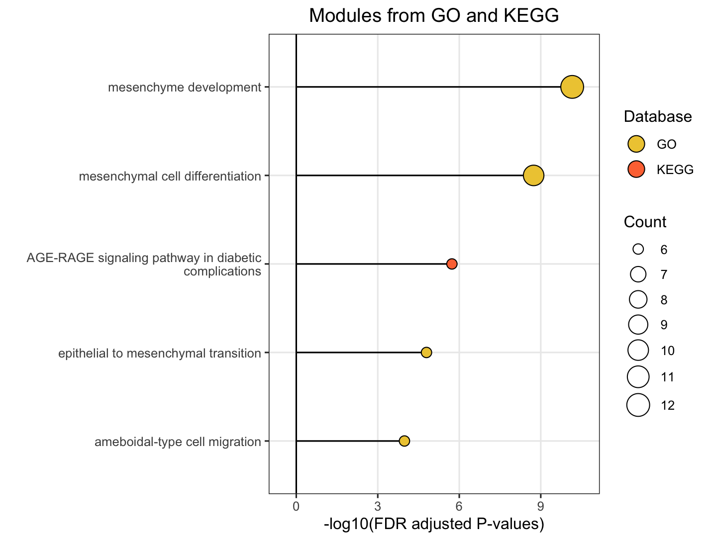

library(mapa)8 Data Visualization
The mapa package provides comprehensive visualization functions to explore and present your pathway enrichment and functional module results. This chapter covers four main visualization approaches: pathway bar charts, module information plots, similarity networks, and relationship networks.
Important
Prerequisites: Before creating visualizations, ensure you have completed the previous analysis steps. The visualization functions require objects from:
- Enrichment analysis:
enrich_pathway()ordo_gsea() - Module clustering:
merge_pathways()andmerge_modules()ormerge_pathways_bioembedsim() - (Optional) LLM interpretation:
llm_interpret_module()
8.1 Overview of Visualization Functions
mapa provides four main visualization functions:
| Function | Purpose | Best Used For |
plot_pathway_bar() |
Horizontal bar charts of top enriched items | Showing enrichment strength across pathways/modules |
plot_module_info() |
Multi-panel module details (network + bar + wordcloud) | Detailed examination of specific modules |
plot_similarity_network() |
Similarity-based networks | Understanding pathway relationships and clustering |
plot_relationship_network() |
Multi-level hierarchical networks | Visualizing connections across biological levels |
plot_relationship_heatmap() |
Combined relationship network + heatmap (optional word-clouds) | Linking modules/pathways/molecules to expression context |
8.2 Bar Chart Visualization
The plot_pathway_bar() function creates horizontal bar charts showing the top enriched pathways, modules, or functional modules. This is ideal for presenting enrichment results in publications.
8.2.1 Basic Usage
# Basic pathway-level bar chart
plot_pathway_bar(
object = functional_modules,
level = "pathway",
database = c("go", "kegg", "reactome"),
top_n = 5,
x_axis_name = "qscore" # "-log10(FDR)" for ORA
)
8.2.2 Key Parameters
| Parameter | Description | Options/Default |
|---|---|---|
level |
Analysis level | "pathway", "module", "functional_module" |
x_axis_name |
X-axis metric | ORA: GSEA: |
line_type |
Bar style | "straight" (default), "meteor" |
llm_text |
Use LLM names for functional modules | TRUE/FALSE |
top_n |
Number of items to show | Default: 10 |
database |
Databases to include | c("go", "kegg", "reactome", "hmdb", "metkegg") |
Note
X-axis Metrics Explained:
- qscore: -log₁₀(adjusted p-value), higher values indicate more significant enrichment
- RichFactor: Ratio of input genes in pathway vs. all genes in pathway
- FoldEnrichment: Enrichment fold change (GeneRatio divided by BgRatio), see Section 3.3
- NES: Normalized Enrichment Score (GSEA only), positive/negative indicates up/down-regulation
8.3 Module Information Plots
The plot_module_info() function provides detailed, multi-panel visualizations of individual modules, including network topology, pathway rankings, and word clouds. The content of each plot depends on the analysis level:
| Plot level |
(Database-specific) |
(Cross-database) |
|---|---|---|
| Network | Shows pathways within the database-specific module and their similarity connections | Shows representative pathways from database-specific modules (SimCluster) or individual pathways (EmbedCluster) |
| Bar plot | Ranks individual pathways within the module by significance | Ranks the representative pathways or database-specific modules by significance |
| Word cloud | Word frequency from pathway descriptions, with word size reflecting statistical significance | Word frequency from all pathway descriptions in the functional module, with word size proportional to the sum of statistical significance values |
Note
Word Cloud Interpretation: Word size reflects the cumulative statistical significance of pathways containing that word:
- For ORA (Over-Representation Analysis): Word size is proportional to the sum of -log10(adjusted p-value) across pathways containing that word. Larger words indicate terms appearing in pathways with stronger statistical enrichment.
- For GSEA (Gene Set Enrichment Analysis): Word size is proportional to the sum of |NES| (absolute Normalized Enrichment Score) across pathways containing that word. Larger words indicate terms appearing in pathways with stronger enrichment signals, regardless of direction (up- or down-regulation).
8.3.1 For Functional Modules
# Get available module IDs first
functional_modules@merged_module$functional_module_result$module
# Create detailed plots for a specific module
module_plots <- plot_module_info(
object = functional_modules,
level = "functional_module",
module_id = "Functional_module_42",
llm_text = FALSE # Set to TRUE to use LLM-generated names if available
)Access individual plots:
# Network of the representative pathways of database-specific modules within the functional module
module_plots$network
# Ranked the representative pathways of database-specific modules within the functional module by significance
module_plots$barplot
# Word cloud of pathway descriptions of the representative pathways of database-specific modules within the functional module
module_plots$wordcloud8.3.2 For Database-Specific Modules
# Examine a specific KEGG module
go_plots <- plot_module_info(
object = functional_modules,
level = "module",
database = "go",
module_id = "go_Module_25"
)
# View the plots
go_plots$network
go_plots$barplot
go_plots$wordcloud

8.4 Similarity Network Visualization
The plot_similarity_network() function visualizes how pathways or modules cluster together based on similarity metrics.
8.4.1 Basic Usage
# Functional module similarity network
plot_similarity_network(
object = functional_modules,
level = "functional_module",
degree_cutoff = 4, # Only show modules with >2 pathways
text = TRUE
)8.4.2 Database-Specific Networks
# GO module network
plot_similarity_network(
object = functional_modules,
level = "module",
database = "go",
degree_cutoff = 5,
text = TRUE
)8.4.3 Focus on Specific Modules
# Examine specific modules only
plot_similarity_network(
object = llm_interpreted_modules,
level = "functional_module",
module_id = c("Functional_module_18", "Functional_module_51", "Functional_module_128"),
llm_text = TRUE
)8.4.4 Key Parameters
| Parameter | Description | Usage |
|---|---|---|
degree_cutoff |
Minimum pathways per module | Filter small modules |
text |
Show representative names | One label per module |
text_all |
Show all pathway names | All nodes labeled |
llm_text |
Use LLM-generated names | For functional modules with LLM interpretation |
module_id |
Specific modules to show | Focus on modules of interest |
8.5 Relationship Network Visualization
The plot_relationship_network() function creates comprehensive multi-level networks showing relationships between functional modules, modules, pathways, and molecules.
8.5.1 Basic Usage
object <- functional_modules
object@merged_module$functional_module_result <-
head(object@merged_module$functional_module_result, 2)
# Full hierarchy: functional modules → modules → pathways → molecules
plot_relationship_network(
object = object,
include_functional_modules = TRUE,
include_modules = TRUE,
include_pathways = TRUE,
include_molecules = TRUE,
functional_module_text = TRUE,
pathway_text = TRUE,
molecule_text = FALSE
)8.5.2 Circular Layout
# Circular layout for better visualization of complex networks
plot_relationship_network(
object = object,
include_functional_modules = TRUE,
include_modules = FALSE,
include_pathways = TRUE,
include_molecules = TRUE,
circular_plot = TRUE, # Concentric circles layout
functional_module_text = TRUE,
molecule_text = FALSE
)
8.5.3 Customization Options
| Parameter | Description | Default |
|---|---|---|
include_* |
Include specific node types | All TRUE |
*_color |
Node colors by type | Predefined colors |
*_text |
Show text labels | Varies by type |
*_text_size |
Label font size | 3 |
circular_plot |
Circular vs. horizontal layout | FALSE |
8.6 Relationship Heatmap Visualization
The plot_relationship_heatmap() function creates an integrated plot that links a relationship network (functional modules → pathways → molecules) to an expression heatmap.
At the pathway level: mean expression per pathway is shown
At the molecule level: per-molecule expression with optional clustering is shown
(Optional) You can also add word-cloud annotations to summarize each functional module
Tip
ID Mapping Checklist: If you see “No expression data available for your selected modules”, verify that:
The id column in expression_data uses the expected identifier type
Your earlier convert_id() step produced IDs consistent with the enrichment pipeline
8.6.1 Get Our Example Data
MAPA provides several built-in demo datasets that help you to go through and study MAPA workflow such as pathway enrichment analysis in previous Chapter 3, and this heatmap visualization step.
To load any dataset, use:
data(ora_expression_dt) # Expression data for ORA heatmaps
data(gsea_expression_dt) # Expression data for GSEA heatmapsBelow are some info about these two datasets:
| Dataset | Content | Rows | Columns | Use | Source |
|---|---|---|---|---|---|
ora_expression_dt |
Expression values of 65 muscle genes across 8 samples | 65 | 9 | Over-Representation Analysis (ORA) heatmap visualization | Takasugi et al., Nat Commun 15, 8520 (2024), DOI: 10.1038/s41467-024-52845-x |
gsea_expression_dt |
Expression values of 5,167 liver genes across 8 samples | 5167 | 9 | Gene Set Enrichment Analysis (GSEA) visualization | Takasugi et al., Nat Commun 15, 8520 (2024), DOI: 10.1038/s41467-024-52845-x |
8.6.2 Basic Use: Pathway Level
# This example uses ORA-style expression matrix that matches the gene IDs in your modules
plot_relationship_heatmap(
object = object, # functional_module object
level = "pathway",
expression_data = ora_expression_dt, # e.g., demo expression for muscle (65 genes × 8 samples)
module_content_number_cutoff = 3, # keep modules with >3 pathways
wordcloud = TRUE, # add module-level word clouds
llm_text = FALSE # set TRUE to use LLM summaries (if available)
)8.6.3 Basic Use: Molecular Level
# Focus on specific modules and visualize individual molecules
plot_relationship_heatmap(
object = functional_modules,
level = "molecule",
expression_data = gsea_expression_dt, # e.g., demo expression for liver (5,167 genes × 8 samples)
# module_ids = c("Functional_module_10", "Functional_module_25"),
cluster_rows = TRUE, # hierarchical clustering of molecules
show_cluster_tree = TRUE, # show the dendrogram
scale_expression_data = TRUE # z-score per row
)8.6.4 Key Parameters
| Parameter | Description | Options/Default/Use |
|---|---|---|
level |
Granularity of the view | "pathway" or "molecule" |
expression_data |
Expression matrix with id + sample columns | Use our example data |
module_ids |
Plot only selected modules | NULL |
module_content_number_cutoff |
Keep modules with pathway count greater than this threshold | NULL |
cluster_rows |
Perform row clustering | FALSE |
show_cluster_tree |
Show dendrogram (molecule level) | TRUE |
wordcloud |
Add module word-cloud | TRUE |
llm_text |
Use LLM summaries if previously having run this step | TRUE |
*_position_limits, *_color, *_text |
Layout and labeling of network nodes | Adjust for readability in dense plots |
plot_widths, heatmap_height_ratios, network_height_ratios |
Panel sizing & alignment | Tweak when labels or modules are many |
8.7 Troubleshooting Visualization Issues
Common Issues and Solutions:
- Empty plots or warnings about no data
- Check that your cutoffs (
p.adjust.cutoff,count.cutoff) aren’t too stringent - Verify that modules exist at the specified level
- Check that your cutoffs (
- Text labels overlapping or unreadable
- Adjust
y_label_widthparameter - Use
text_all = FALSEto show only representative labels - Increase plot dimensions when saving
- Adjust
- EmbedCluster results at module level
- Use
level = "functional_module"for EmbedCluster results - EmbedCluster bypasses database-specific modules
- Use
- LLM text not appearing
- Ensure
llm_interpret_module()was run successfully - Check that the object contains LLM interpretation results
- Ensure
8.8 Next Steps
Continue to Results Report to learn how to generate comprehensive analysis reports that combine all your results into professional documents.